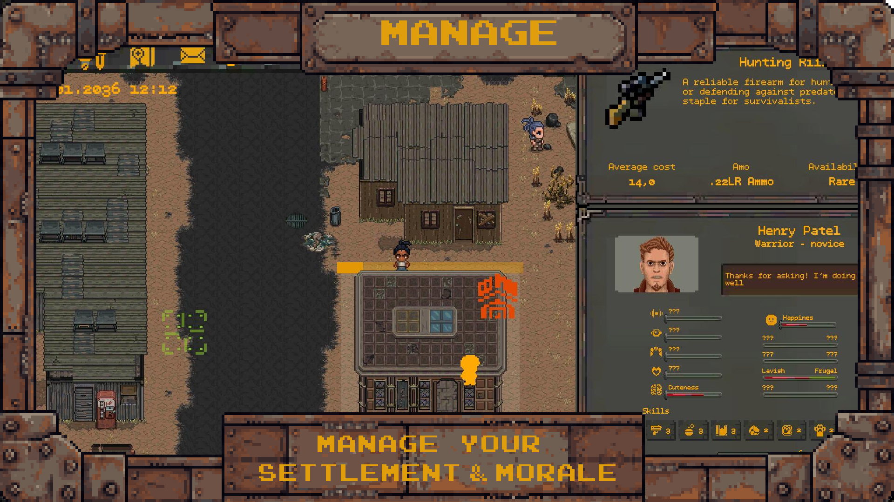
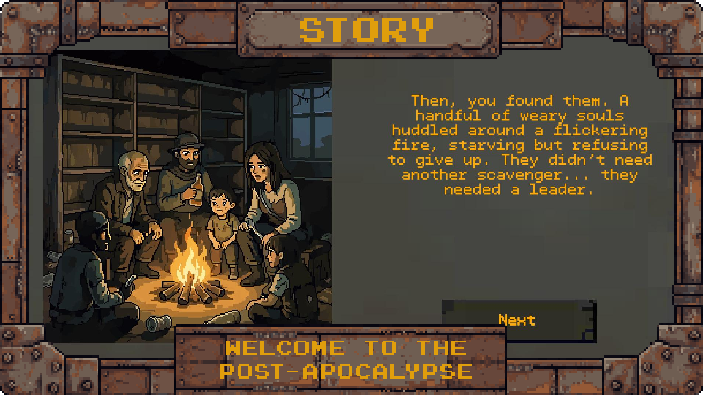
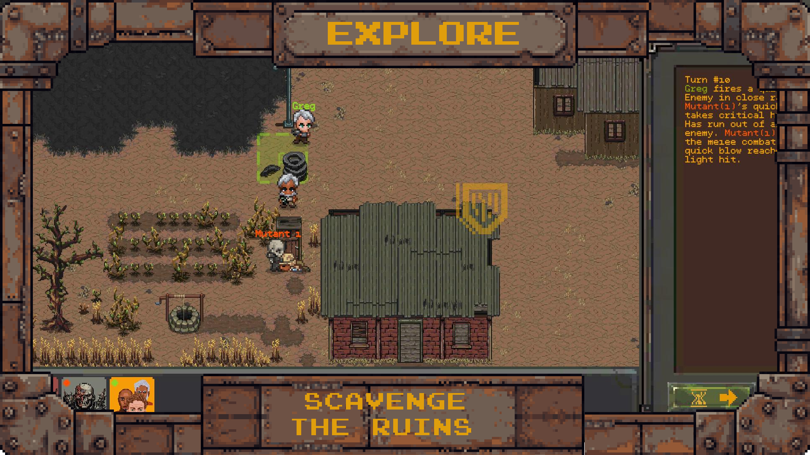

Manifest Pustkowi
Psychika ocalałych
Każdy osadnik ma cechy, potrzeby, nastroje i portfel. Dobry lub zły, spokojny lub niespokojny, oszczędny lub rozrzutny. Zignoruj ich, a zaczną się kłócić, unikać pracy albo wyjdą za bramę.
Zarządzanie osadą
Rozmieszczaj budynki na siatce, przydzielaj pracowników, pilnuj generatorów, płać pensje i karm wszystkich. Każdy system napędza kolejny.
Ryzyko i nagroda
Wyprawy przynoszą łupy, doświadczenie i plotki, a czasem rannych lub brak powrotu. Bestie, bandyci i promieniowanie nie dbają o twoje plany.



Podręcznik polowy
Poradnik ocalałego, wyd. 1990-którysś. Przeczytaj przed pierwszą zimą.
- Czas i świat
- Osada i budynki
- Osadnicy, umiejętności i doświadczenie
- Morale i psychika
- Potrzeby i usługi
- Ekonomia i produkcja
- Elektryczność
- Pensje
- Zdrowie i choroby
- Wyprawy i zbieractwo
- Spotkania
- Handel i plotki
- Walka
- Fortyfikacje i obrona
- Grabież i podbój
- Bestie i gniazda
- Porady przetrwania
01 // Czas i świat
Jeden tick to jedna minuta rzeczywista, czyli około 3 minuty czasu gry. Świat płynie trzy razy szybciej niż rzeczywistość: jedna godzina to trzy godziny w grze.
- Co godzinę: sprawdzanie prądu, chorób i spotkań.
- Codziennie: pensje, wypłacane wieczorem około 17:00.
- Osadnicy śpią w nocy, podróż jest wtedy groźniejsza, a ranni odpoczywający w domu powoli zdrowieją.
- Świat toczy się dalej, gdy cię nie ma. Po powrocie sprawdź dziennik wiadomości.
- Niektóre tryby dają okres ochronny bez ataków. Gry próbne kończą się po określonej liczbie dni.
Mapa jest podzielona na sektory z osadami, ruinami, pustkowiami i innymi miejscami. Widzisz tylko to, co mieści się w zasięgu wzroku twoich osad i grup. Percepcja, Skradanie i Szpiegostwo decydują, kto kogo zauważy.
02 // Osada i budynki
Osada ma siatkę pól (część zablokowana przez ruiny, śmieci, skały lub drzewa), osadników, magazyn towarów i gotówki, ustawienia ekonomiczne, elektryczność i budynki. Każdy budynek ma miejsca dla pracownika lub mieszkańca.
| Rodzaj | Rola |
|---|---|
| Zarządzanie | Ratusz, Magazyn, Szeryf, Wyprawy |
| Technologia | Warsztat, Kowal, Rusznikarz, Elektronika, Laboratorium |
| Mieszkalne / Wynajem | Dom, Namiot, Dormitorium, Rezydencja / Motel, Hotel |
| Żywność | Farma, Hodowla, Wiatrak |
| Wspólne / Gastronomia / Rozrywka | Sklep, Targowisko, Szkoła, Kościół / Restauracja, Bar, Salon gier, Kasyno |
| Medyczne | Apteka, Przychodnia, Szpital |
| Energia | Generatory ręczne, diesla, słoneczne |
| Obrona | Płot, Mur, Posterunek, Bunkier, Wieża, Pułapki, Pole minowe, Alarm |
- Miejsca pracy wymagają wykwalifikowanych pracowników. Bez nich budynek stoi bezczynnie.
- Niektóre budynki potrzebują prądu, inne zaopatrzenia (bar potrzebuje napojów, restauracja jedzenia).
- Fundamenty kosztują około 10 razy więcej pracy przy budowie lub rozbiórce.
- Uszkodzone budynki działają gorzej lub wcale, dopóki nie zostaną naprawione. Niektórych nie da się naprawić.
Budowa, remont, rozbiórka
Budowa wymaga materiałów z magazynu i pracy osadników z odpowiednią umiejętnością (Architektura, Mechanika, Elektronika, Chemia, Rolnictwo, pomaga też Siła). Nakład pracy zależy od złożoności, rozmiaru i wagi materiałów. Uszkodzone budynki można remontować lub ulepszać. Rozbiórka jest nieco szybsza od budowy i może zwrócić część materiałów. Wstrzymanie pracy zachowuje postęp.
03 // Osadnicy, umiejętności i doświadczenie
Każdy osadnik ma cechy fizyczne (Siła, Percepcja, Zwinność, Odwaga, Urok), cztery skale psychiczne (Dobry↔Zły, Spokojny↔Niespokojny, Oszczędny↔Rozrzutny, Hojny↔Chciwy), umiejętności, zawód, poziom doświadczenia, zdrowie i własną gotówkę.
- Nowi ludzie mogą prosić o przyjęcie. Najpierw sprawdź umiejętności, nastawienie i wolne mieszkania.
- Niezadowoleni osadnicy mogą chcieć odejść. Wygnanie kogoś psuje nastrój pozostałych.
- Gdy osadnik umiera, jego rzeczy mogą trafić do osady, a bliscy go opłakują.
Umiejętności
Walka wręcz, Strzelectwo, Broń ciężka, Materiały wybuchowe, Broń miotana, Taktyka, Wspinaczka, Prowadzenie pojazdów, Tropiciel, Przetrwanie, Handel, Krasomówstwo, Rolnictwo, Mechanika, Elektronika, Chemia, Hazard, Medycyna, Architektura, Złodziejstwo, Skradanie, Szpiegostwo, Wiedza. Umiejętności rosną z użyciem przez dziesięć poziomów.
Zawody i doświadczenie
Zawody (Chemik, Handlarz, Medyk, Najemnik, Myśliwy, Złodziej, Żołnierz, Szpieg i inne) podpowiadają startowe umiejętności.
Poziomy: Żółtodziób → Uczeń → Pomocnik → Wykonawca → Biegły → Weteran → Ekspert → Mistrz → Przywódca → Pionier.
04 // Morale i psychika
Każdy osadnik ma wskaźnik szczęścia. Szczęśliwi osadnicy dobrze pracują i zostają. Nieszczęśliwi pracują słabo, odchodzą lub sprawiają kłopoty.
| Przyczyna | Skutek |
|---|---|
| Potrzeby | Zaspokojona potrzeba poprawia humor. Ignorowanie jej wywołuje gniew. |
| Mieszkanie | Brak domu jest złem. Lepsze mieszkanie to lepszy nastrój. |
| Praca | Lubiana praca pomaga. Zmiana pracy wpływa na nastrój. |
| Pensje | Spóźnione lub niskie wypłaty wywołują gniew. |
| Budynki publiczne | Kościół, szkoła i podobne pomagają. |
| Prezenty | Podarowanie przedmiotu poprawia humor. |
| Podbój / grabież | Zwycięstwo podnosi morale. Złupienie domu je obniża. |
| Podział łupów | Niesprawiedliwy podział rodzi urazę. |
| Rany, wygnanie, nuda | Ranni, niespokojni lub poruszeni wygnaniem osadnicy tracą humor. |
05 // Potrzeby i usługi
Osadnicy wydają własne pieniądze na potrzeby. Działający budynek dla danej potrzeby przynosi ci dochód. Brakujący lub zamknięty czyni ludzi nieszczęśliwymi.
| Potrzeba | Budynek |
|---|---|
| Przedmioty, broń, pancerze | Sklep, Targowisko, Rusznikarz, Kowal |
| Naprawy | Warsztat, Kowal |
| Napoje / posiłki | Bar / Restauracja |
| Rozrywka | Salon gier, Kasyno, Dom publiczny |
| Wiara / nauka | Kościół / Szkoła |
| Opieka medyczna | Apteka, Przychodnia, Szpital |
| Odpoczynek | Koszary, Dormitorium, Motel, Hotel |
Usługi wymagają pracowników, prądu (niektóre) i zaopatrzenia. Ekonomia jest przetwarzana raz na turę: każdy osadnik sprawdza potrzeby, znajduje pasujący budynek i płaci.
06 // Ekonomia i produkcja
Typy przedmiotów: Żywność, Mechaniczne, Elektroniczne, Chemiczne, Pancerze, Amunicja, Broń, Paliwo, Transport. Od części mechanicznych i narzędzi po uzi, AK-47, granatniki, kamizelki kuloodporne, muły i konie.
- Produkcja: wymaga odpowiedniego budynku, materiałów w magazynie i pracownika z właściwą umiejętnością. Można ją zatrzymać w każdej chwili.
- Magazyn: wszystko leży w jednym magazynie. Gotówka jest trzymana w nominałach i służy do pensji i handlu.
- Żywność jest regularnie zjadana. Jej brak szkodzi nastrojowi i zdrowiu.
- Stan: broń i narzędzia się zużywają. Korzystaj z usług naprawczych.
- Świat ma własną ekonomię, raportowaną globalnie.
07 // Elektryczność
- Generator ręczny: jeden pracownik daje 1 jednostkę, dwóch lub więcej daje 2.
- Generator diesla: co godzinę spala paliwo z magazynu. Bez paliwa nie ma prądu.
- Słoneczne, wiatrowe, elektrownie: nie potrzebują paliwa.
- Prąd jest sprawdzany co godzinę. Jeśli produkcja jest niższa od zapotrzebowania, część budynków się wyłącza.
08 // Pensje
- Wypłacane raz dziennie wieczorem (17:00) z gotówki osady.
- Trzy stawki: budowniczowie i robotnicy, strażnicy, naukowcy.
- Niewypłaceni pracownicy wpadają w gniew. Wyższe pensje cieszą, ale drenują kasę.
- Pensje nie są wypłacane, gdy osada jest atakowana.
09 // Zdrowie, choroby i rany
- Rany obniżają wydajność. Odpoczynek, leki i budynki medyczne je leczą.
- Stany: Napromieniowany, Zatruty, Chory, Zaraza. Choroba uderza średnio raz na około sześć godzin i się rozprzestrzenia.
- Pomaga personel medyczny (umiejętność Medycyna) z narzędziami oraz apteka, przychodnia lub szpital.
- Ranni wojownicy muszą wyzdrowieć, zanim znów wyruszą.
10 // Wyprawy i zbieractwo
Grupa to zespół osadników podróżujących razem, niosących własne przedmioty i gotówkę. Wysyłasz ją przez budynek Wyprawy.
- Ustaw cel albo ruszaj od razu.
- Tempo marszu: Postój, Wolne, Normalne, Szybkie. Szybciej znaczy sprawniej, ale ryzykowniej.
- Umiejętności Tropiciel i Prowadzenie pojazdów, pojazdy i zwierzęta ułatwiają podróż.
- Po powrocie rozstrzygasz łupy, rany, doświadczenie i nastroje.
| Postawa | Zachowanie |
|---|---|
| Kupiec | Nigdy nie atakuje |
| Zwiadowca | Unika kontaktu, próbuje uciec |
| Szpieg | Nie atakuje |
| Łowca nagród | Atakuje tylko przestępców |
| Obrońca | Atakuje tylko wrogów |
| Najeźdźca | Atakuje każdego, kto nie jest sojusznikiem |
| Bandyta | Atakuje wszystkich |
| Negocjatorzy | Najpierw próbują rozmawiać |

11 // Spotkania
W podróży lub w pobliżu domu możesz spotkać przyjaznych lub wrogich wędrowców, dzikie bestie, zagrożenia takie jak promieniowanie, przydatne znaleziska albo chorobę. Wyniki zależą częściowo od testów umiejętności (Przetrwanie, Percepcja, Zwinność, Wiedza). Grupy spotykające się na mapie mogą się zderzyć: spotkanie, okazja do handlu, walka lub szansa na prześlizgnięcie się.
12 // Handel i plotki
- Własny sklep: sprzedawaj swoim osadnikom.
- Wymiana grupowa: wymieniaj przedmioty między grupą a osadą.
- Obce sklepy: handluj z innymi osadami.
- Umiejętności Handel i Krasomówstwo poprawiają ceny. Wartość zależy od wagi, rzadkości i stanu.
- Plotki: zapłać w barze, by dowiedzieć się o pobliskich miejscach, grupach i ludziach. Lepszy bar to lepsze informacje.

13 // Walka
Walka sterowana przez gracza (widzisz pole walki i wydajesz rozkazy) lub automatyczna (gra rozstrzyga ją sama). Wojownicy tworzą oddziały jako atakujący lub obrońcy. Możesz przejąć dowodzenie, dołączyć do oddziału, wyznaczać cele lub się wycofać.
- Akcje: Ruch, Wejście do walki, Strzał (pojedynczy, krótka seria, seria, ciągły: więcej strzałów to mniejsza celność i większe zużycie amunicji), Przeładowanie, Zmiana broni, Ukrycie.
- Bronie: białe, dystansowe, ciężkie. Liczy się zasięg i amunicja.
- Pancerz zmniejsza obrażenia. Ściany i przeszkody blokują ruch i widoczność.
- Umiejętności: Walka wręcz, Strzelectwo, Broń ciężka, Broń miotana, Taktyka, Materiały wybuchowe. Cechy: Zwinność, Percepcja, Odwaga, Siła.
- Ciężko ranni wojownicy mogą zostać obezwładnieni lub zabici. Niskie morale i odwaga skłaniają do ucieczki.
- Po bitwie: zwycięzca zbiera łupy, ocaleni zyskują doświadczenie, polegli psują nastrój, a raport z bitwy pokazuje przebieg.
14 // Fortyfikacje i obrona
Podczas bitwy w twojej osadzie rutynowe czynności, takie jak pensje, prąd i choroby, są wstrzymane.
- Bariery (płot, mur, posterunek) blokują ruch, a niektóre także widoczność. Projektuj obronę świadomie.
- Używaj posterunków, wież strażniczych, pułapek i pól minowych.
- Trzymaj w domu uzbrojonych, wyszkolonych osadników i płać strażnikom na czas.
- Bestie atakują też osady. Zaplanuj straże, jeśli okolica jest zagrożona.
15 // Grabież i podbój
- Grabież: wyślij grupę, by złupiła budynki. Pomagają Złodziejstwo, Skradanie i Percepcja.
- Podbój: pokonaj obrońców, a miejsce będzie twoje, co cieszy osadników.
- Jeśli złupiono twój dom, osadnicy wpadają w gniew.
- Miejsca mogą zostać uszkodzone, zniszczone lub zamienione w ruiny.
16 // Bestie i gniazda
Szczury, krokodyle, mutanty, dzikie psy, gigantyczne mrówki, kanibale, wielkie koty, ptaki, potwory i roboty bojowe. Żyją w gniazdach, wysyłają grupy, a gniazda z czasem rosną i się rozprzestrzeniają. Zniszczenie gniazda eliminuje pobliskie zagrożenie i może przynieść nagrodę.
17 // Porady przetrwania i koniec gry
Przegrywasz, gdy nie masz osad ani ludzi zdolnych kontynuować, albo gdy kończy się okres próbny (tylko gry próbne).
- Najpierw jedzenie, mieszkania i prąd.
- Obserwuj szczęście i wcześnie usuwaj przyczyny.
- Różnicuj umiejętności: budowniczy, medyk, handlarz i kilku wojowników.
- Broń się mądrze: bariery, wieże, uzbrojeni osadnicy w domu.
- Płać pensje na czas i miej rezerwę gotówki.
- Nie rozrastaj się za bardzo. Każdy budynek kosztuje pracowników, prąd i utrzymanie.
- Uważaj na noc.
- Zwiadowca przed grabieżą.
- Naprawiaj swój sprzęt.
Plan rozwoju // Co finansujemy?
Każda wpłata na Patreonie bezpośrednio kupuje czas pracy nad grą oraz wysokiej jakości grafiki i dźwięki, zamieniając podstawową wersję w ogromne postapokaliptyczne uniwersum.
- Podziemne lochy, jaskinie i kopalnie
Nowe podziemne lokacje do eksploracji, rzadkie zasoby i unikalne podziemne zagrożenia. - Rozbudowany system misji
Fabularne zadania i dynamiczne wydarzenia narracyjne. - Podbój osad
Mechaniki najazdów, rozszerzania terytorium i dyplomacji pustkowi. - Nowy warunek zwycięstwa: Władza nad światem
Podbij całe pustkowie zamiast tylko przetrwać. - System frakcji
Dołącz do globalnych konfliktów, walcz o wpływy i pnij się po szczeblach frakcji. - Multiplayer w czasie rzeczywistym
Rywalizuj lub współpracuj z innymi Przywódcami na żywo.
Cele dodatkowe
- Misje eskorty zaopatrzenia i karawany handlowe
- Uzbrojone pojazdy bojowe
- Dodatkowe wersje językowe